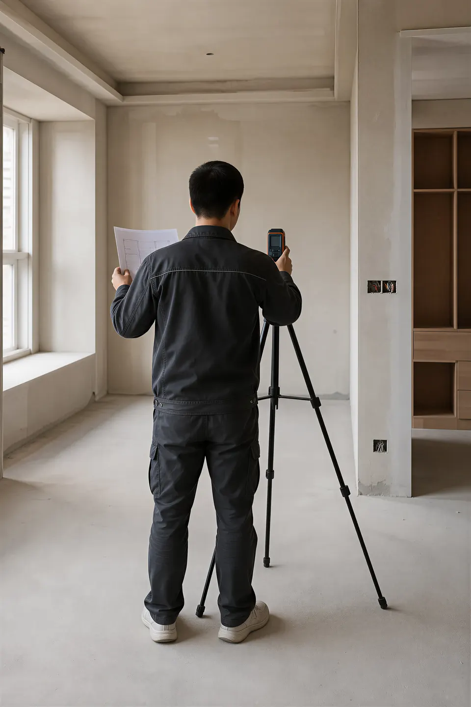
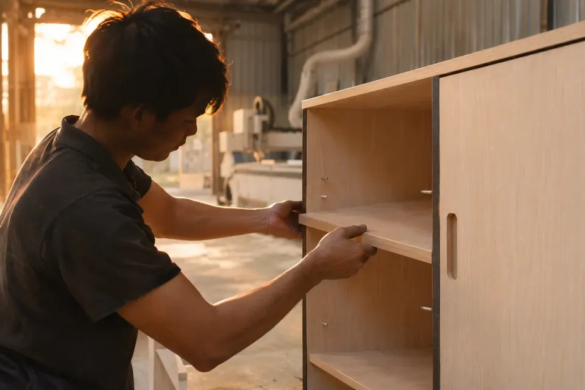
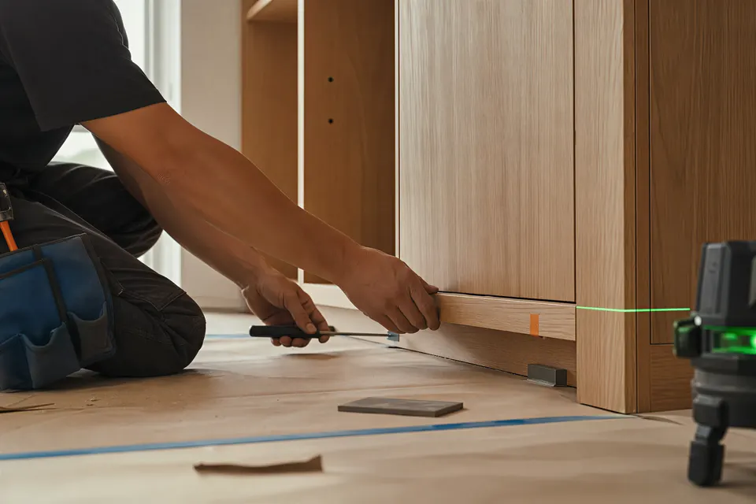
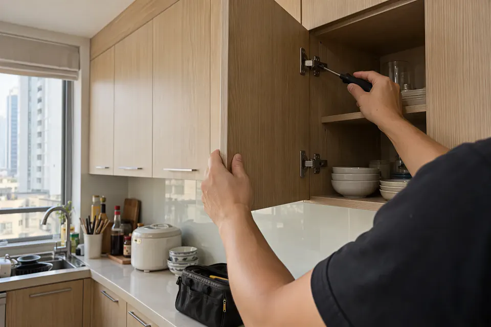

<!-- @dsCard group="Page" height=1100 -->
<!-- GENERATED by scripts/docs/build-design-system.mjs from src/site/residential/index.html; do not edit. -->
<link rel="stylesheet" href="https://fonts.googleapis.com/css2?family=Plus+Jakarta+Sans:ital,wght@0,300;0,400;0,500;0,600;0,700;1,300;1,500&display=swap">
<script>addEventListener("click", (event) => { if (event.target.closest("a[href]")) event.preventDefault(); }, true);</script>
<script>document.documentElement.lang = "vi"; document.documentElement.classList.add("motion-fallback", "motion-ready");</script>
<section
          class="editorial-strip detail-process-editorial section-gap"
          data-header-tone="ink"
          role="region"
          tabindex="0"
          aria-labelledby="process-title"
        >
          <svg class="editorial-digit-sprite" aria-hidden="true">
            <symbol id="residential-digit-1" viewBox="0 0 514 745"><path d="M0 745V645H197V100H57V0H317V645H514V745Z" /></symbol>
            <symbol id="residential-digit-2" viewBox="0 0 489 757"><path d="M5 757V672L204 454Q263 389 297 349.5Q331 310 344.5 280.5Q358 251 358 218Q358 164 326.5 134.5Q295 105 245 105Q195 105 157 135.5Q119 166 104 224L0 194Q12 135 47.5 91.5Q83 48 134 24Q185 0 245 0Q314 0 366 26.5Q418 53 447 100Q476 147 476 209Q476 250 460.5 289Q445 328 414.5 370Q384 412 336 465L161 657H489V757Z" /></symbol>
            <symbol id="residential-digit-3" viewBox="0 0 505 757"><path transform="translate(0 -12)" d="M248 769Q191 769 140 747Q89 725 52 685Q15 645 0 591L101 553Q120 606 159 635Q198 664 248 664Q289 664 320.5 647Q352 630 369.5 599Q387 568 387 524Q387 481 369.5 450Q352 419 321 403Q290 387 248 387Q231 387 212.5 390Q194 393 180 398L154 343L342 112H39V12H475V107L289 337L288 299Q352 300 401 328.5Q450 357 477.5 406.5Q505 456 505 521Q505 591 471.5 647.5Q438 704 380.5 736.5Q323 769 248 769Z" /></symbol>
            <symbol id="residential-digit-4" viewBox="0 0 540 745"><path transform="translate(0 -12)" d="M329 757V589H0V491L324 12H441V491H540V589H441V757ZM86 534 67 491H329V106L360 116Z" /></symbol>
            <symbol id="residential-digit-5" viewBox="0 0 498 757"><path d="M246 757Q190 757 139 736Q88 714 52 675Q15 636 0 582L100 544Q118 595 157 624Q197 652 246 652Q285 652 315 633Q346 614 363 582Q380 548 380 506Q380 464 363 432Q346 399 315 380Q285 362 246 362Q206 362 173 380Q140 400 126 432L30 410L86 0H471V100H132L177 52L136 366L100 340Q128 298 169 280Q210 260 264 260Q334 260 386 293Q439 326 468 381Q498 436 498 506Q498 578 465 634Q432 692 375 724Q318 757 246 757Z" /></symbol>
          </svg>
          <article class="editorial-item">
            <svg class="editorial-number" viewBox="0 0 514 745" preserveAspectRatio="xMaxYMin meet" aria-hidden="true"><use href="#residential-digit-1" /></svg>
            <span class="editorial-media"></span>
            <div><h3 data-en="Survey">Khảo sát</h3><p data-en="We visit your home to survey it and listen to what the whole family needs.">Đến tận nhà khảo sát và lắng nghe nhu cầu của cả gia đình.</p></div>
          </article>
          <article class="editorial-item">
            <svg class="editorial-number" viewBox="0 0 489 757" preserveAspectRatio="xMaxYMin meet" aria-hidden="true"><use href="#residential-digit-2" /></svg>
            <span class="editorial-media"></span>
            <div><h3 data-en="Consultation">Tư vấn</h3><p data-en="We advise on layout, materials and budget until you are fully satisfied.">Tư vấn bố trí, vật liệu và ngân sách cho đến khi bạn thật sự hài lòng.</p></div>
          </article>
          <article class="editorial-item">
            <svg class="editorial-number" viewBox="0 0 505 757" preserveAspectRatio="xMaxYMin meet" aria-hidden="true"><use href="#residential-digit-3" /></svg>
            <span class="editorial-media"></span>
            <div><h3 data-en="Production">Sản xuất</h3><p data-en="Everything is made in our workshop on CNC machines and checked carefully before delivery.">Sản xuất tại xưởng bằng máy CNC, kiểm tra kỹ từng chi tiết trước khi giao.</p></div>
          </article>
          <article class="editorial-item">
            <svg class="editorial-number" viewBox="0 0 540 745" preserveAspectRatio="xMaxYMin meet" aria-hidden="true"><use href="#residential-digit-4" /></svg>
            <span class="editorial-media"></span>
            <div><h3 data-en="Installation and handover">Lắp đặt và bàn giao</h3><p data-en="We install with care, clean up thoroughly and hand over only when everything is complete.">Lắp đặt cẩn thận, dọn dẹp sạch sẽ và chỉ bàn giao khi mọi thứ đã hoàn chỉnh.</p></div>
          </article>
          <article class="editorial-item">
            <svg class="editorial-number" viewBox="0 0 498 757" preserveAspectRatio="xMaxYMin meet" aria-hidden="true"><use href="#residential-digit-5" /></svg>
            <span class="editorial-media"></span>
            <div><h3 data-en="After-sales">Hậu mãi</h3><p data-en="We are always ready to maintain and help whenever your family needs us.">Luôn sẵn sàng bảo trì và hỗ trợ bất cứ khi nào gia đình cần.</p></div>
          </article>
        </section>
<section
          class="detail-process section-gap"
          data-header-tone="ink"
          aria-label="Khảo sát, tư vấn, sản xuất, lắp đặt và hậu mãi"
          data-en-aria-label="Survey, consultation, production, installation and after-sales"
        >
          <article class="process-step" data-motion-up>
            <span>01</span>
            <h3 data-en="Survey">Khảo sát</h3>
            <p
              data-en="Measure the site, listen to your needs and note what needs solving."
            >
              Đo hiện trạng, lắng nghe nhu cầu và ghi nhận những điều cần giải quyết.
            </p>
          </article>
          <article class="process-step" data-motion-up data-motion-delay="0.15">
            <span>02</span>
            <h3 data-en="Consultation">Tư vấn</h3>
            <p
              data-en="Agree with you on function, materials, finish level and scope of work."
            >
              Cùng bạn thống nhất công năng, vật liệu, mức hoàn thiện và phạm vi công việc.
            </p>
          </article>
          <article class="process-step" data-motion-up data-motion-delay="0.3">
            <span>03</span>
            <h3 data-en="Production">Sản xuất</h3>
            <p
              data-en="Produce detailed drawings so each part is made exactly as agreed."
            >
              Triển khai bản vẽ chi tiết để từng bộ phận được làm đúng phương án đã chốt.
            </p>
          </article>
          <article class="process-step" data-motion-up data-motion-delay="0.45">
            <span>04</span>
            <h3 data-en="Installation">Lắp đặt</h3>
            <p
              data-en="Align on site, inspect the finish and check everything with you before handover."
            >
              Căn chỉnh tại công trình, kiểm tra hoàn thiện và cùng bạn nghiệm thu trước khi bàn giao.
            </p>
          </article>
          <article class="process-step" data-motion-up data-motion-delay="0.6">
            <span>05</span>
            <h3 data-en="After-sales">Hậu mãi</h3>
            <p
              data-en="Maintain and support after handover so your space stays in good shape."
            >
              Bảo trì và hỗ trợ sau bàn giao để công trình luôn bền đẹp.
            </p>
          </article>
        </section>
